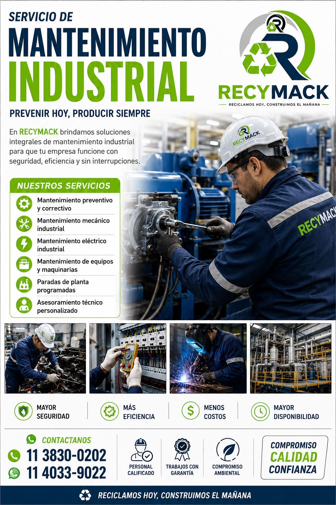
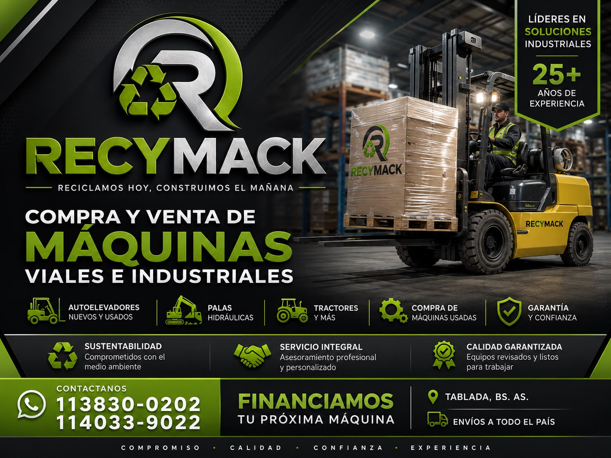
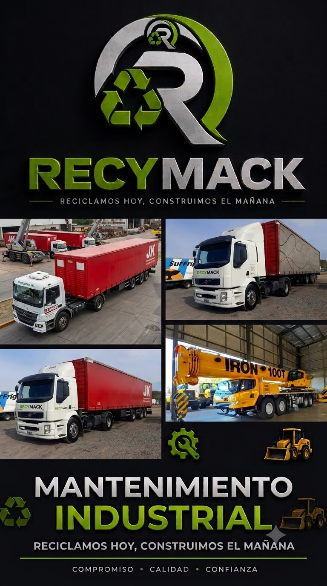
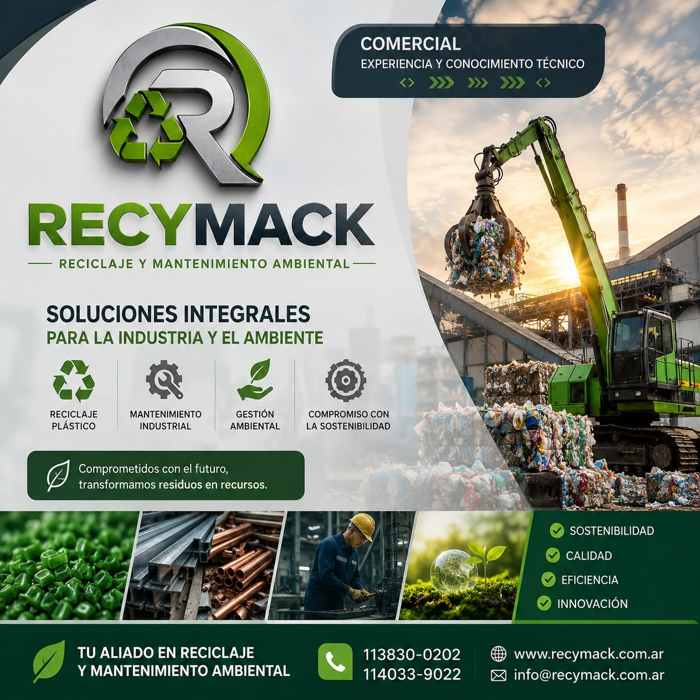

Tablada, Bs. As. — operamos en todo el país
Compramos chatarra industrial y metales ferrosos y no ferrosos. Además hacemos mantenimiento industrial y compra-venta de maquinaria vial e industrial. Más de 25 años trabajando con plantas y empresas argentinas.
Prevenir hoy, producir siempre.
Soluciones integrales para que tu planta funcione con seguridad, eficiencia y sin interrupciones. Personal calificado y trabajos con garantía.

Compra y venta


Camiones, semirremolques y grúas para retirar material y trasladar equipos. Coordinamos el retiro y hacemos envíos a todo el país.
Coordinar un retiroRecuperamos residuos post industriales y los devolvemos a la línea de producción como materia prima.
La empresa
Somos una empresa argentina de soluciones integrales para la industria y el ambiente. Trabajamos con compromiso, calidad y confianza en cada operación.

Contanos qué material tenés o qué necesita tu planta. Te respondemos y te asesoramos sin compromiso.
Este sitio web se encuentra suspendido por una cuota pendiente de pago. Para reactivarlo de inmediato, comunicate con nosotros y lo dejamos online en minutos.
Regularizar por WhatsApp